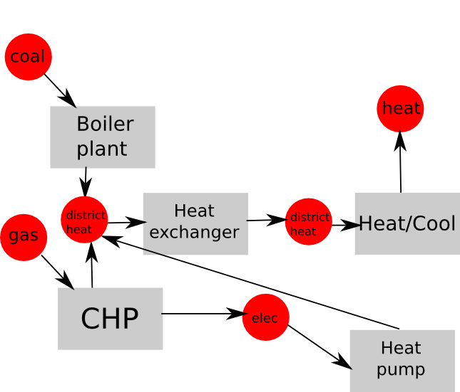
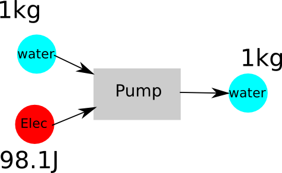
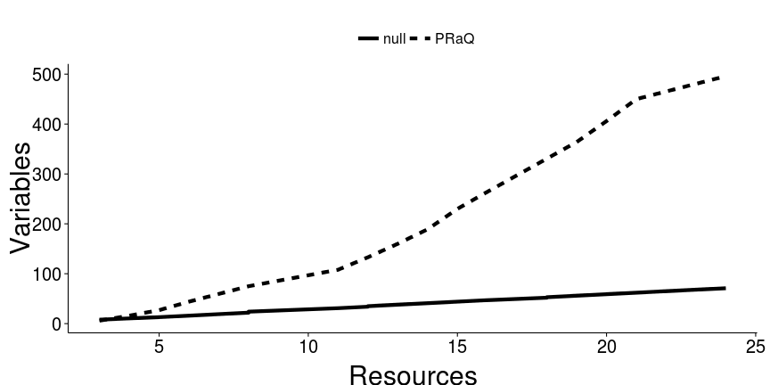

Highly integrated urban energy, water and waste resources
EWRE Seminar, 26 February 2014
Tom Ravalde
Supervisor: Dr James Keirstead
Urbanisation


Environmental strain

Economic stability
\begin{align} \mbox{Population growth} = f(\mbox{current population}, \mbox{resource requirements}) \end{align}


Opportunities
Co-location of infrastructure:
- Cascading
- CHP
- Energy from waste/biomass
- Water reuse
- Decentralisation
- Grey water reuse
- Local generation
- Solar PV


Existing models ...


...but

Urban metabolism

By how much can urban metabolism be improved through models which optimise the integrated provision of energy, water and waste?,
(Non)linearity
| Conversion | Transport | |
|---|---|---|
| Energy | Dispatchable | Elec |
| End use | Gas | |
| Renewables | Heat | |
| Water | Pump/Dam | Friction |
| Contamination | ||
| Waste | Dispatchable | Wastewater |
| Treatment |
Modelling
\[\mbox{production} = \sum_{\mbox{processes}} \mbox{resource ratio} \times \mbox{process rate}\]
pump water_in -1
pump water_out 1
pump elec_in -98.1

pump water_in mass -1
pump water_in energy 0
pump water_out mass 1
pump water_out energy 98.1
pump elec_in -98.1


Case study: Shann Gu
\[\mbox{imports} + \mbox{production} = \mbox{exports} + \mbox{demand}\]

Results

Future work
- Explore nonlinear options
- Develop case study
- add resource storage
- finer spatial and temporal discretisation
- Build pre- and post-processors
- Relate to urban metabolism literature